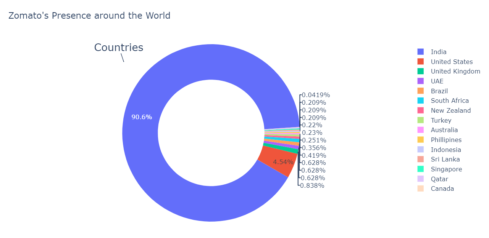

In this section, Explore my certified expertise in AWS Cloud Computing, IBM's Python for Data Science, and advanced skills in Deep Learning and Machine Learning with PyTorch and Python and more.

Delve into the world of Data Science through my insightful blogs covering topics such as Gradient Descent, Activation Functions, Regularization in deep learning, Random Forest & XGBoost implementation, Loss Functions, Amazon Redshift connectivity with SQL Workbench, AWS Redshift connectivity via Jupyter Notebook or VSCode, and Exploratory Data Analysis of Zomato’s Restaurant Dataset.
Explore my project showcasing Image Classification with ResNets, incorporating regularization techniques and data augmentation in PyTorch. Witness how these advanced methods enhance model performance and generalization.

In this project, I uncover the city's best dining spots and hidden culinary treasures through data analysis. Discover top eateries and dining experiences with ease. üçΩÔ∏è
Dive deep into the fundamentals of Gradient Descent with my comprehensive blog, covering everything you need to know to master this essential optimization algorithm.

Discover my Power BI Project, showcasing insightful data visualizations and interactive dashboards designed to unlock valuable insights and enhance decision-making.
Explore my data analysis and visualization project on Amazon's Top 50 Bestselling Books from 2009 to 2019. Utilizing Python, Pandas, and visualization libraries such as Plotly, Matplotlib, and Seaborn, witness comprehensive insights derived from thorough analysis.
In this project, embark on an exploration of Generative Adversarial Networks (GANs) training using PyTorch, a fascinating journey into the realm of generative modeling. Witness the power of GANs in creating synthetic data and generating realistic images.
Discover my Power BI Project, showcasing insightful data visualizations and interactive dashboards designed to unlock valuable insights and enhance decision-making.
Discover the application of transfer learning for image classification using ResNets in PyTorch. Uncover the effectiveness of leveraging pre-trained models to achieve superior performance in image recognition tasks.
Discover my Power BI Project, showcasing insightful data visualizations and interactive dashboards designed to unlock valuable insights and enhance decision-making.

Explore the image classification with Convolutional Neural Networks (CNNs) implemented in PyTorch. Witness the power of deep learning in action as we tackle complex image recognition tasks.
Dive into the regularization techniques for Convolutional Neural Network (CNN) models in PyTorch. Explore how regularization enhances the performance and generalization of image classification models, ensuring robustness in predictions.
Experience the predictive power of Random Forest and XGBoost algorithms in Walmart store sales forecasting, enhanced with meticulous hyperparameter tuning. Witness how advanced machine learning techniques optimize accuracy and efficiency in predictive analytics.
Explore the dynamic landscape of market segmentation within the insurance industry through my Streamlit web app. Witness how data-driven insights drive strategic decision-making and enhance customer targeting in this ever-evolving sector.

Embark on a journey of predictive analytics with my project on New York City taxi fare prediction. Witness the power of machine learning algorithms as they accurately forecast taxi fares, providing valuable insights for both passengers and service providers alike.

Discover insights into employee attrition rates through my data analysis project, utilizing a blend of Python libraries including Seaborn, Plotly, Matplotlib, Pandas, NumPy, and more. Uncover patterns and trends to inform strategic decisions and foster employee retention.

Explore the gemstone price prediction through my predictive analytics project, featuring an intuitive web app powered by Streamlit. Witness the fusion of data science and user-friendly interface design as we forecast gemstone prices with accuracy and efficiency.

Unlock insights into Indian metro cities' flat rental trends through my comprehensive data analysis project. Leveraging Python libraries such as Seaborn, Plotly, Matplotlib, Pandas, NumPy, and more, explore patterns and factors influencing rental prices, aiding informed decision-making in the real estate market.
Dive deep into the insights gleaned from the Stack Overflow Developer Survey through my comprehensive data analysis project. Utilizing Python libraries including Seaborn, Plotly, Matplotlib, Pandas, NumPy, and more, explore the evolving landscape of developer preferences, trends, and demographics.
In this section, I demonstrated my project on Email/Spam Classification using a Streamlit web app, showcasing the power of Natural Language Processing (NLP) techniques integrated with NLTK. Explore how machine learning effectively distinguishes between emails and SMS messages.
Discover the essence of a loss function in my latest blog. Gain insights into its pivotal role in machine learning models, its significance in optimizing performance, and its various types and applications in diverse domains.
Unlock the potential of Amazon Redshift with my comprehensive blog on connecting via SQL Workbench. Explore step-by-step instructions, best practices, and practical tips to seamlessly integrate Redshift into your data workflow, empowering your analytics endeavors.
Dive into the world of Activation Functions with my comprehensive blog. Discover the role they play in neural networks, explore popular types like ReLU and Sigmoid, and gain insights into their impact on model performance and training dynamics.
Explore the regularization in deep learning, particularly within Convolutional Neural Networks (CNNs), through my latest blog post. Uncover the importance of regularization techniques like L1 and L2 regularization, dropout, and batch normalization in improving model generalization and combating overfitting.
Dive into the world of ensemble learning with my latest blog post on implementing Random Forest and XGBoost algorithms. Learn how these powerful techniques work, discover their advantages, and explore practical tips for optimizing performance in your machine learning projects.
Discover seamless integration with AWS Redshift using Python notebooks in my latest blog post. Follow along step-by-step as I guide you through the process of connecting to Redshift, executing queries, and leveraging its power directly within your Python environment.
Dive into the culinary world with my latest blog post on exploratory data analysis of Zomato's restaurant dataset. Uncover fascinating insights into restaurant trends, customer preferences, and geographical patterns through insightful visualizations and data-driven exploration.
{kind=link}